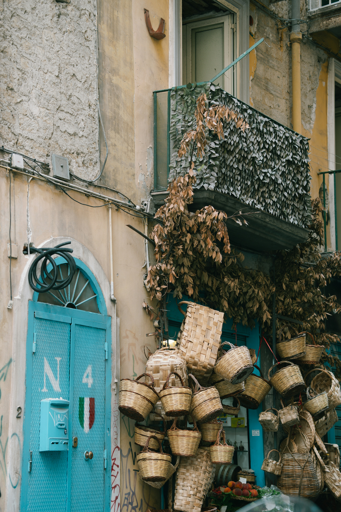

✦ Empedokles · Hippokrates · Ptolemäus ✦
Geschenkkörbe

Korb Empedokles
7 Produkte · inkl. Urkunde


z. B. mit diesen Delikatessen

Korb Ptolemäus
12 Produkte · inkl. Urkunde


z. B. mit diesen Delikatessen

Dein persönlicher Korb
So viele Produkte, wie Du möchtest
Stell Dir Deinen Korb selbst aus allen Convivia-Delikatessen zusammen.
Drei Körbe, gestaffelt vom kleinen Gruß bis zum großen Festkorb — jeder benannt
nach einem der drei Lehrer der Temperamentenlehre. Alle enthalten biologische
Convivia-Delikatessen aus Sizilien und die gedruckte Temperament-Urkunde.
Für den persönlich zugeschnittenen Korb nutze den
Temperament-Kalkulator.
Die genaue Zusammenstellung jedes Korbes richtet sich nach dem Temperament der beschenkten
Person — die abgebildeten Delikatessen sind Beispiele. Den persönlich zugeschnittenen Korb
erstellt der Temperament-Kalkulator.

Handgeflochtene Körbe aus Sizilien